Soru 1Cevap: D
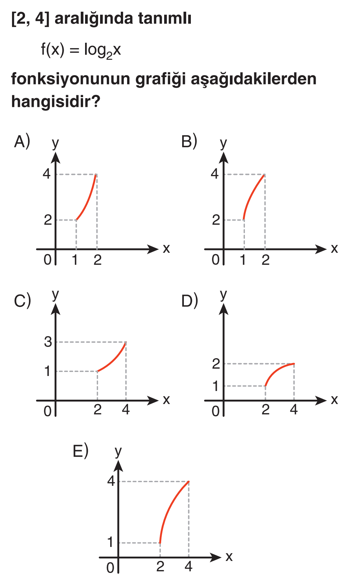
Çözüm
- $\log_2x$ artandır.
- $f(2)=1$, $f(4)=2$.
- Grafik $(2,1)$'den $(4,2)$'ye yükselen eğri (D).
Cevap: D
Soru 2Cevap: B
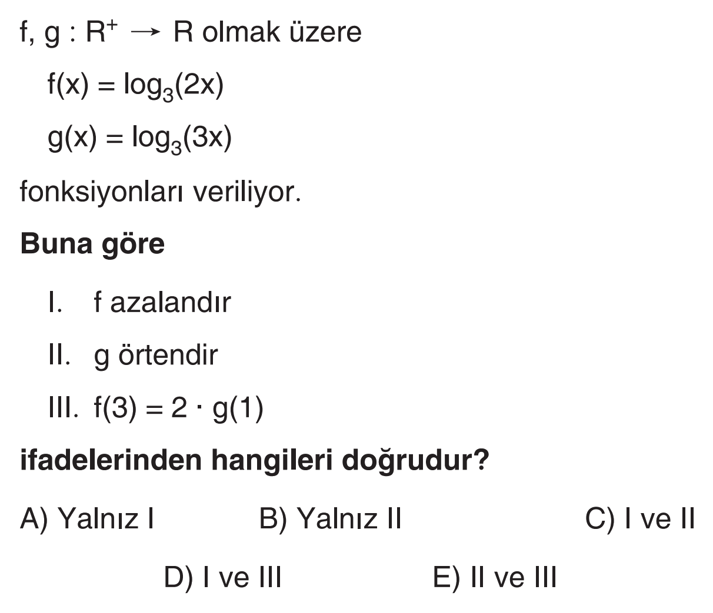
Çözüm
- $\log_3(2x)$: taban $3\gt1$, artandır (I yanlış).
- $g$'nin görüntü kümesi $\mathbb R$: örten (II doğru).
- $f(3)=\log_36$, $2g(1)=2\log_33=2=\log_39$; eşit değil (III yanlış). Yalnız II (B).
Cevap: B
Soru 3Cevap: E
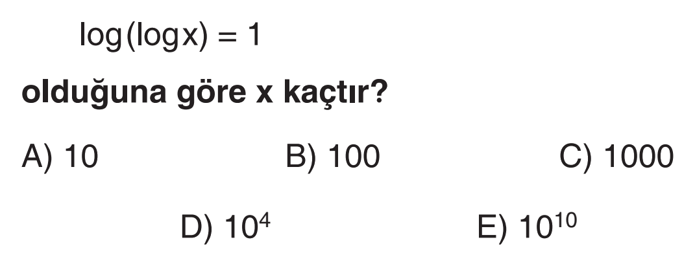
Çözüm
- $\log(\log x)=1\Rightarrow\log x=10$.
- Onluk logaritma tanımı: $x=10^{10}$.
- Cevap E.
Cevap: E
Soru 4Cevap: B
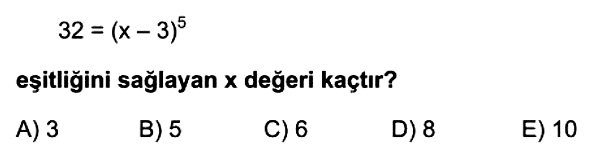
Çözüm
- $32=2^5=(x-3)^5$.
- Tek kuvvet: $x-3=2$.
- $x=5$ (B).
Cevap: B
Soru 5Cevap: E
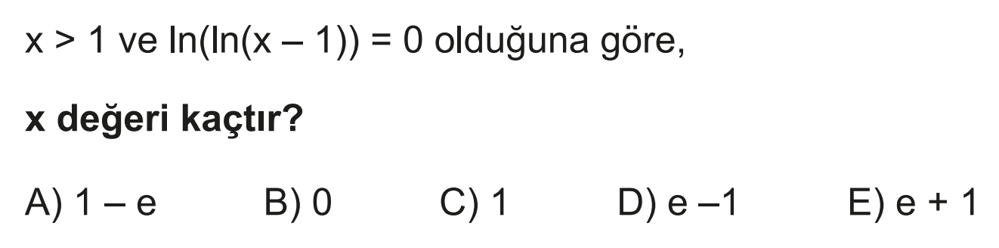
Çözüm
- $\ln(\ln(x-1))=0\Rightarrow\ln(x-1)=1$.
- $x-1=e$.
- $x=e+1$ (E).
Cevap: E
Soru 6Cevap: D
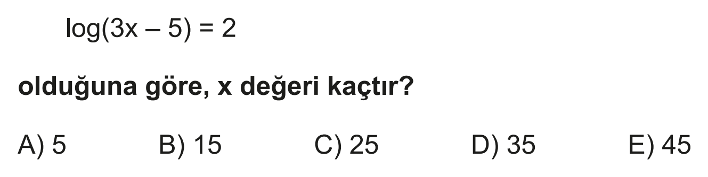
Çözüm
- $3x-5=10^2$.
- $3x=105$.
- $x=35$ (D).
Cevap: D
Soru 7Cevap: B
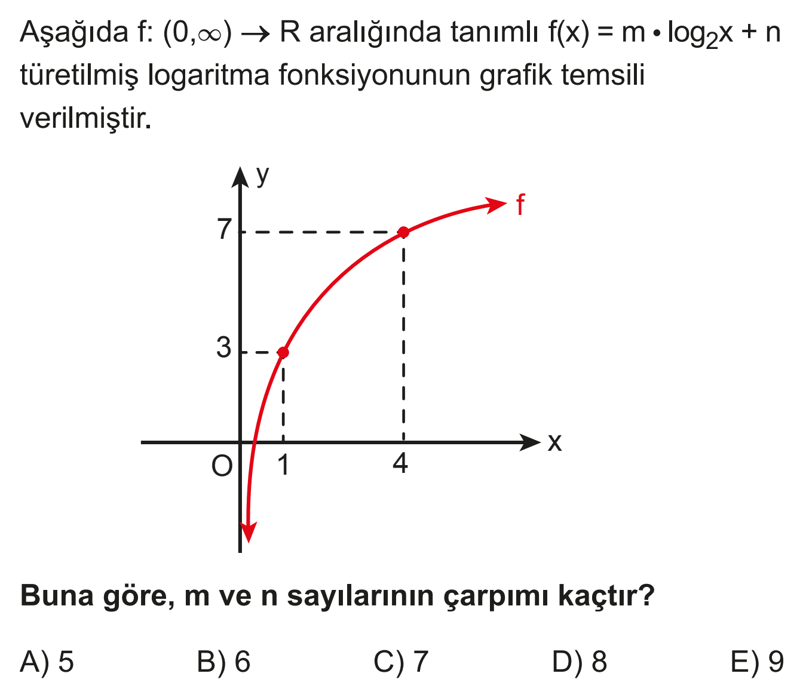
Çözüm
- $f(1)=m\log_21+n=n=3$.
- $f(4)=2m+3=7\Rightarrow m=2$.
- $m\cdot n=6$ (B).
Cevap: B
Soru 8Cevap: E
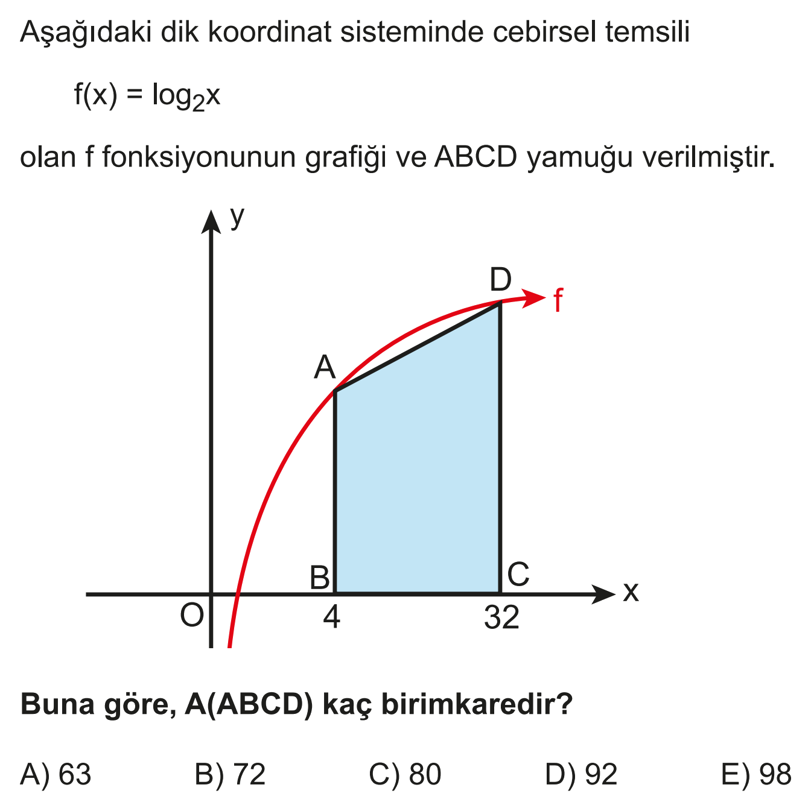
Çözüm
- $A(4,\log_24)=(4,2)$, $D(32,\log_232)=(32,5)$.
- Yamuğun paralel kenarları $2$ ve $5$, yüksekliği $32-4=28$.
- Alan $\dfrac{2+5}2\cdot28=98$ (E).
Cevap: E
Soru 9Cevap: D
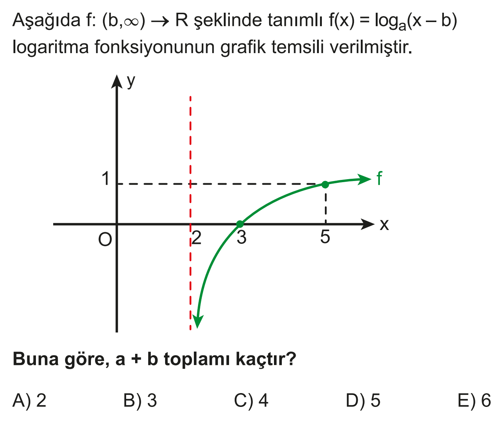
Çözüm
- Dikey asimptot $x=2$: $b=2$.
- $f(5)=\log_a3=1\Rightarrow a=3$ (grafik $(3,0)$'dan da geçer: $\log_31=0$).
- $a+b=5$ (D).
Cevap: D
Soru 10Cevap: C
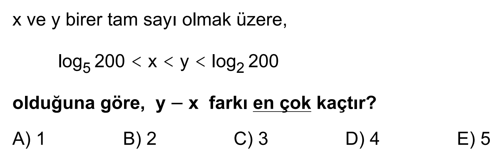
Çözüm
- $125\lt200\lt625\Rightarrow3\lt\log_5200\lt4$; $128\lt200\lt256\Rightarrow7\lt\log_2200\lt8$.
- Tam sayılar $4\le x\lt y\le7$.
- $y-x$ en çok $7-4=3$ (C).
Cevap: C
Soru 11Cevap: C
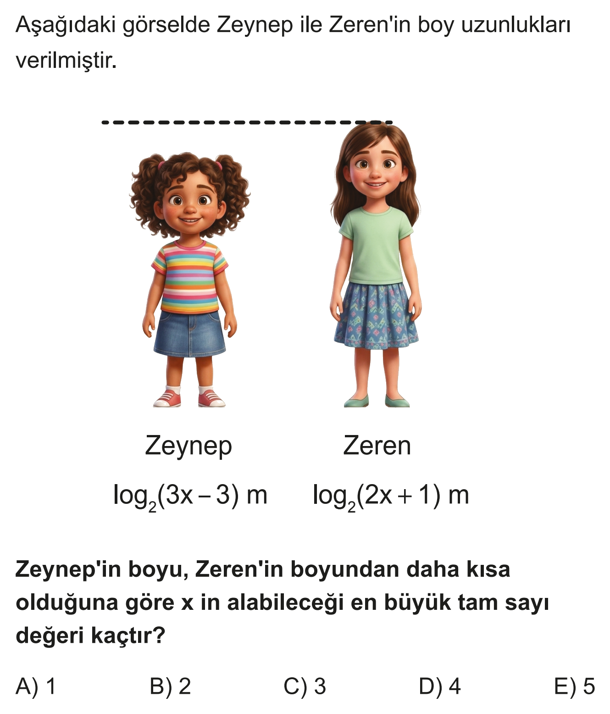
Çözüm
- $\log_2(3x-3)\lt\log_2(2x+1)\Rightarrow x\lt4$.
- Tanım: $3x-3\gt0\Rightarrow x\gt1$.
- En büyük tam sayı $3$ (C).
Cevap: C
Soru 12Cevap: B
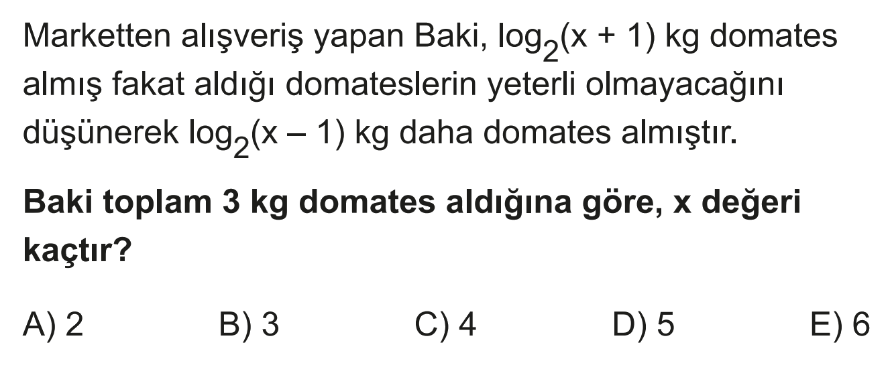
Çözüm
- $\log_2(x+1)+\log_2(x-1)=3\Rightarrow x^2-1=8$.
- $x^2=9$.
- Tanım $x\gt1$: $x=3$ (B).
Cevap: B
Soru 13Cevap: D
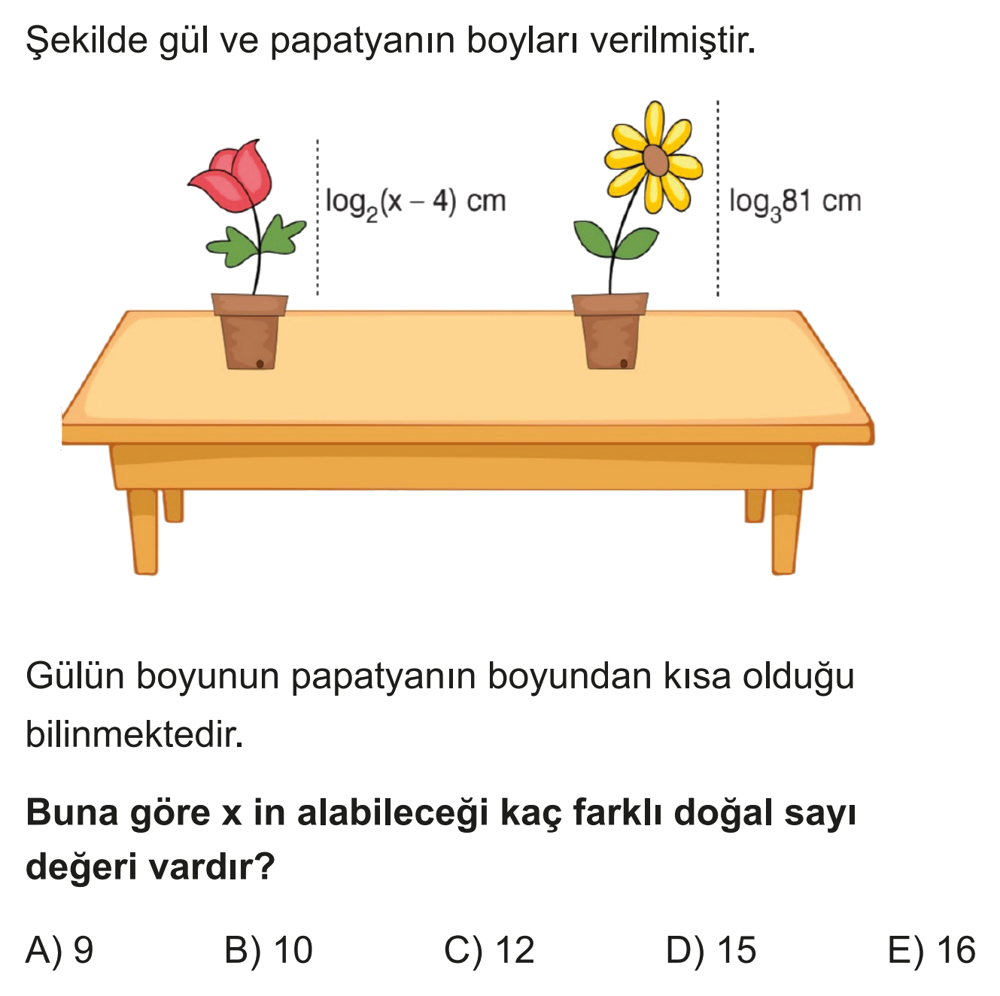
Çözüm
- $\log_381=4$: $\log_2(x-4)\lt4$.
- $0\lt x-4\lt16\Rightarrow4\lt x\lt20$.
- $5,\dots,19$: $15$ doğal sayı (D).
Cevap: D
Soru 14Cevap: C
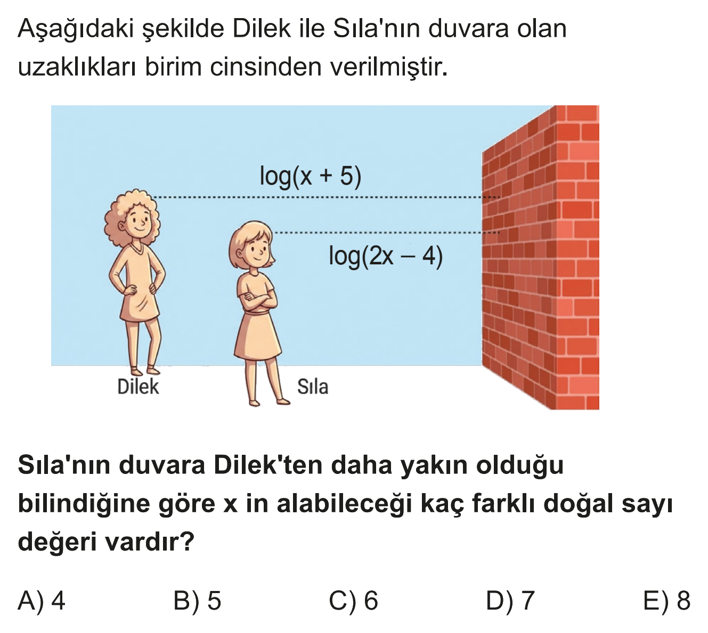
Çözüm
- Sıla daha yakın: $\log(2x-4)\lt\log(x+5)\Rightarrow2x-4\lt x+5\Rightarrow x\lt9$.
- Tanım: $2x-4\gt0\Rightarrow x\gt2$.
- $x=3,\dots,8$: $6$ doğal sayı (C).
Cevap: C
Soru 15Cevap: B
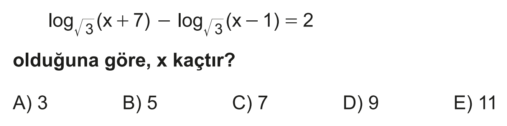
Çözüm
- $\log_{\sqrt3}\dfrac{x+7}{x-1}=2\Rightarrow\dfrac{x+7}{x-1}=3$.
- $x+7=3x-3\Rightarrow x=5$.
- Kontrol: $12\gt0$, $4\gt0$. Cevap B.
Cevap: B
Soru 16Cevap: C
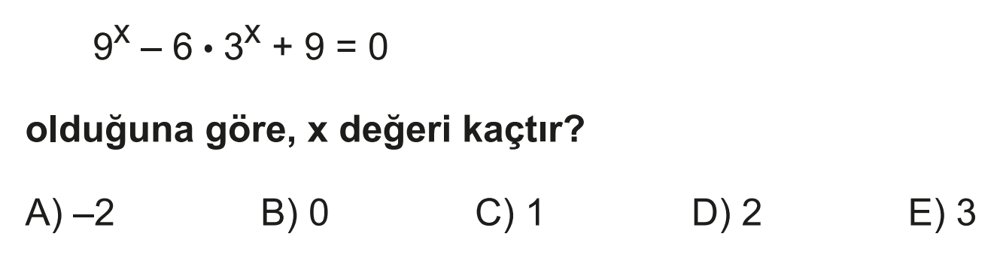
Çözüm
- $3^x=t$: $t^2-6t+9=0$.
- $(t-3)^2=0\Rightarrow t=3$.
- $3^x=3\Rightarrow x=1$ (C).
Cevap: C
Soru 17Cevap: D
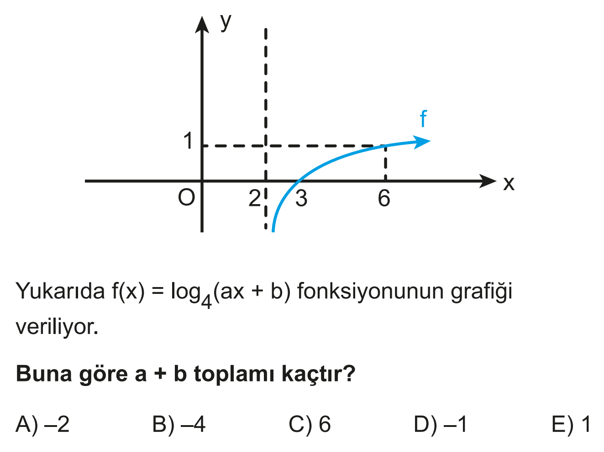
Çözüm
- $x=3$'te sıfır: $3a+b=1$; $f(6)=1$: $6a+b=4$.
- Çıkarınca $3a=3\Rightarrow a=1$, $b=-2$ (asimptot $x=2$ ile uyumlu).
- $a+b=-1$ (D).
Cevap: D
Soru 18Cevap: B
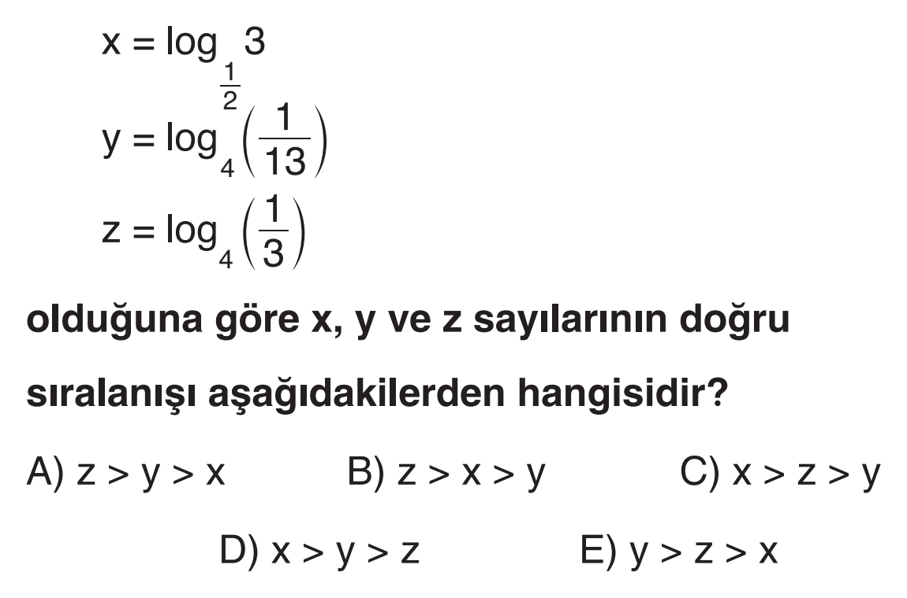
Çözüm
- $x=-\log_23$, $\log_23\approx1{,}58\Rightarrow x\approx-1{,}58$.
- $y=-\log_413$, $\log_413\approx1{,}85\Rightarrow y\approx-1{,}85$; $z=-\log_43\approx-0{,}79$.
- $z\gt x\gt y$ (B).
Cevap: B
Soru 19Cevap: C
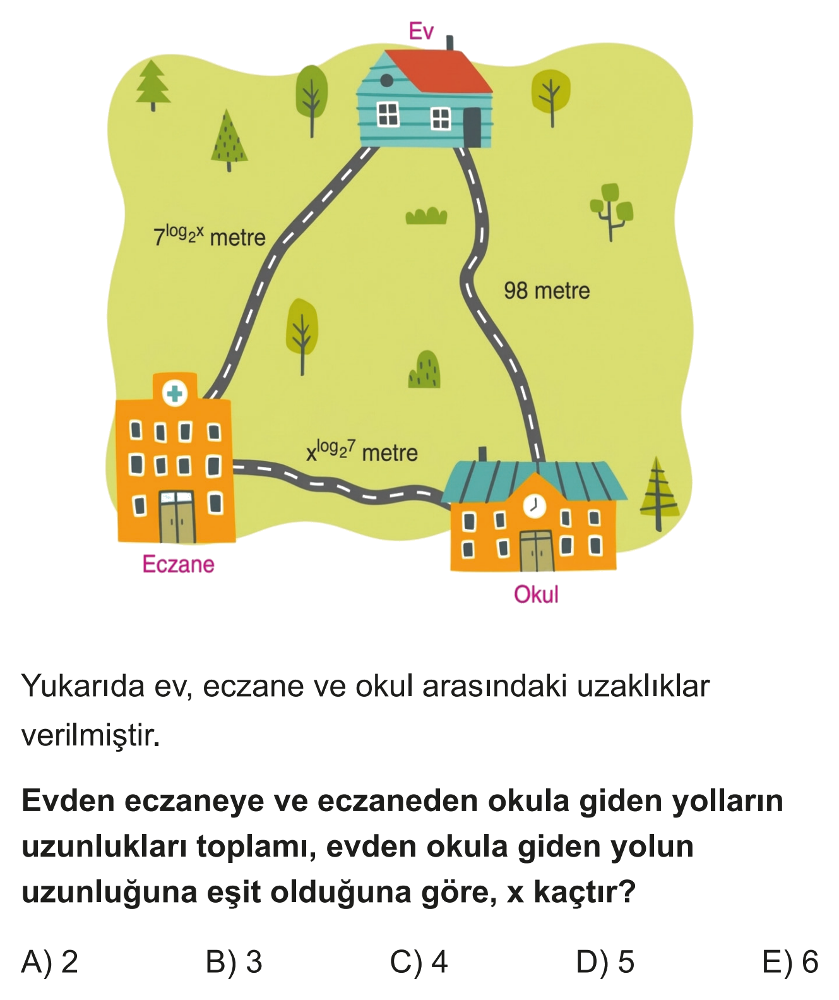
Çözüm
- $x^{\log_27}=7^{\log_2x}$.
- $7^{\log_2x}+7^{\log_2x}=98\Rightarrow7^{\log_2x}=49$.
- $\log_2x=2\Rightarrow x=4$ (C).
Cevap: C
Soru 20Cevap: D
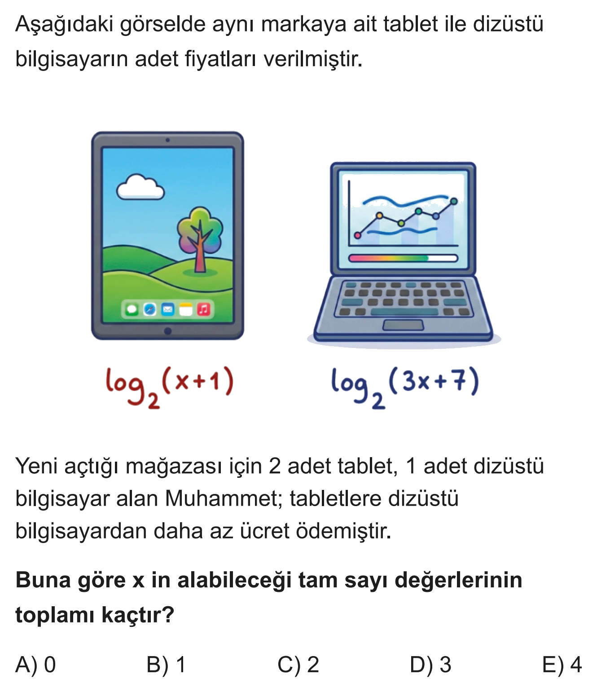
Çözüm
- $2\log_2(x+1)\lt\log_2(3x+7)\Rightarrow(x+1)^2\lt3x+7$.
- $x^2-x-6\lt0\Rightarrow-2\lt x\lt3$; tanım $x\gt-1$.
- $x=0,1,2$; toplam $3$ (D).
Cevap: D